📌 Chapter snapshot (CBSE)
- Chapter 11 of NCERT Class 10 Mathematics (reprint 2026-27): section 11.1, 2 solved examples and Exercise 11.1 (14 questions), then the summary 11.2.
- Part of the unit Mensuration, worth 10 marks in the CBSE 80-mark paper (shared with Surface Areas and Volumes).
- Recent CBSE 30/1/1 papers asked: arc length and sector-area MCQs (2024 to 2026), the angle swept by a clock hand (2026), a segment question (2023, 2024: 3 to 5 marks) and the brooch case study (2025, 2026: 4 marks).
- Only two formulas really matter: arc = θ/360 × 2πr and sector = θ/360 × πr². A segment is a sector minus a triangle.
Video lesson: Areas Related to Circles
A 5-minute animated lesson with narration and subtitles. Tap a topic to jump to it.
Can't play it here? 🔒 Download the video (MP4) with the PIN from MT Classes and watch it offline.
Sector and segment of a circle
Take a circular roti. Cut it from the centre along two radii and you get a sector (a slice). Cut it along one straight line (a chord) and the smaller piece is a segment.
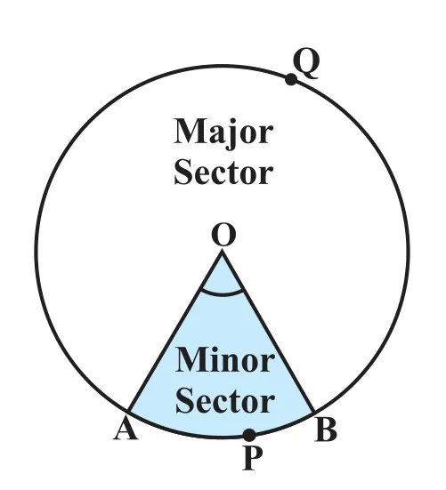
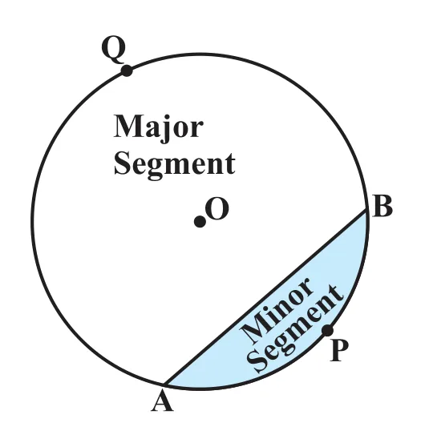
| Region | Bounded by | Angle | Area |
|---|---|---|---|
| Minor sector OAPB | radii OA, OB + minor arc | θ = ∠AOB | θ360 × πr² |
| Major sector OAQB | radii OA, OB + major arc | 360° − θ | πr² − minor sector |
| Minor segment APB | chord AB + minor arc | θ | minor sector − area of ΔOAB |
| Major segment AQB | chord AB + major arc | — | πr² − minor segment |
📝 NCERT Remark
When a question just says “sector” or “segment”, it means the minor sector or the minor segment, unless it says otherwise.
🧠 Sector or segment? One-second test
Does the region touch the centre O? Then it is a sector (two radii). Is it cut by a straight chord that does not pass through O? Then it is a segment. A semicircle is both: the chord is a diameter.
Formulas by the unitary method
NCERT finds the formulas without any new idea: a full circle is a sector of angle 360°. Split it in proportion to the angle.
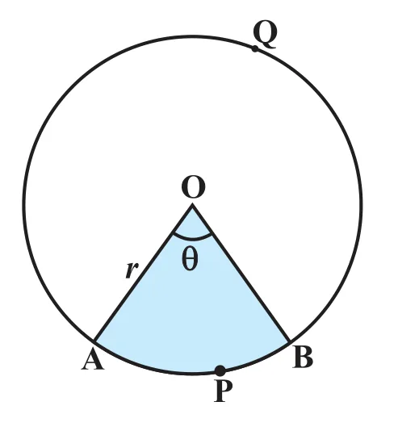
- Angle 360° → area πr²
- Angle 1° → area πr²360
- Angle θ → area θ360 × πr²
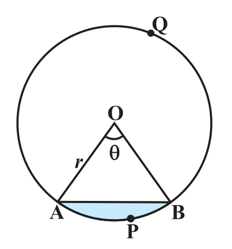
Circle
C = 2πr = πd
A = πr²
Arc length
l = θ360 × 2πr
Sector
A = θ360 × πr²
also = ½ × l × r
Perimeter of sector
P = 2r + l
two radii + the arc
Segment
sector − ΔOAB
Major parts
πr² − minor part
angle 360° − θ
Area of ΔOAB: the NCERT way (Example 2)
Draw OM ⊥ AB. Since OA = OB, ΔAMO ≅ ΔBMO (RHS), so M is the mid-point of AB and ∠AOM = θ2. Then OM = r cos θ2, AM = r sin θ2 and area = ½ × AB × OM. For the angles CBSE uses:
| θ | Fraction θ360 | ΔOAB is | Area of ΔOAB |
|---|---|---|---|
| 60° | 16 | equilateral (side r) | √34 r² |
| 90° | 14 (quadrant) | right isosceles | 12 r² |
| 120° | 13 | OM = r2, AB = √3 r | √34 r² |
| 180° | 12 (semicircle) | flat (AB is a diameter) | 0 |
🧠 Nice numbers with π = 227
- r = 7: 2πr = 44, πr² = 154 · r = 14: 88, 616 · r = 21: 132, 1386 · r = 3.5: 22, 38.5 · r = 28: 176, 2464 · r = 35: 220, 3850
- Find the full circle first, then multiply by the fraction: 60° of r = 21 is 16 × 1386 = 231 cm².
- Clock: minute hand turns 6° per minute, hour hand ½° per minute (30° per hour).
Sector and Segment Explorer
Move the sliders. Choose what to shade. The working below changes as you slide, written the way you write it in the board exam. Press Sweep to watch the fraction θ360 grow.
Solved examples (NCERT)
Example 1: sector of 30° and its major sector
Find the area of the sector of a circle with radius 4 cm and of angle 30°. Also, find the area of the corresponding major sector. (Use π = 3.14)
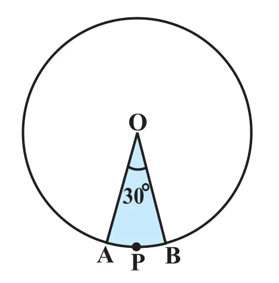
Area of sector OAPB = θ360 × πr² = 30360 × 3.14 × 4 × 4 = 12.563 cm² ≈ 4.19 cm²
Area of major sector = πr² − sector = (3.14 × 16 − 4.19) cm² = 46.05 cm²
Major sector ≈ 46.1 cm²
Alternatively: (360 − θ)360 × πr² = 330360 × 3.14 × 16 = 46.05 cm². Both ways get full marks.
Example 2: segment AYB with ∠AOB = 120°
Find the area of the segment AYB shown in Fig. 11.6, if the radius of the circle is 21 cm and ∠AOB = 120°. (Use π = 227)
Area of segment AYB = area of sector OAYB − area of ΔOAB … (1)
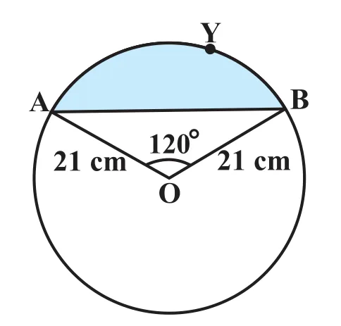
Area of sector OAYB = 120360 × 227 × 21 × 21 = 462 cm² … (2)
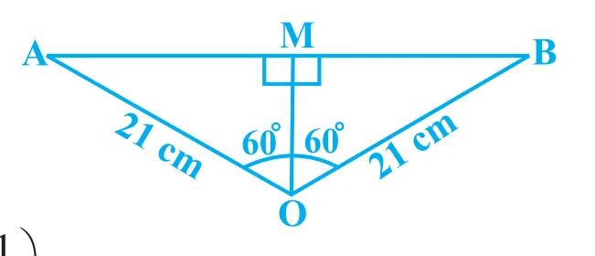
In ΔOMA: OMOA = cos 60° ⇒ x21 = 12 ⇒ OM = 212 cm. AMOA = sin 60° = √32 ⇒ AM = 21√32 cm, so AB = 2AM = 21√3 cm.
Area of ΔOAB = ½ × AB × OM = ½ × 21√3 × 212 = 4414√3 cm² … (3)
Area of segment AYB = (462 − 4414√3) cm² = 214(88 − 21√3) cm²
With √3 ≈ 1.73 this is about 271.3 cm². In the exam, leave it in surd form unless a value of √3 is given.
Labs: clock, grazing, slices, designs
🕰️ Lab 1: Clock-hand sweeper (Ex 11.1 Q3, CBSE 2026 Q15)
A clock hand sweeps a sector. Pick the hand, its length and how many minutes pass (starting at 12).
🐴 Lab 2: Grazing lab (Ex 11.1 Q8)
A horse is tied with a rope. Where the peg is decides the angle it can sweep: 90° at a corner, 180° at the middle of a side, 270° at the outside corner of a shed, 360° on open ground.
Field: square of side 15 m. Shed: square of side 10 m. π = 3.14 as in Q8.
🍕 Lab 3: Equal slices (brooch, umbrella, roti)
Diameters cut a circle into equal sectors. The brooch (Ex Q9, CBSE 2025 and 2026 case study) and the umbrella (Ex Q10) are the same idea.
🎨 Lab 4: Table-cover designer (Ex 11.1 Q13)
Join n equally spaced points on the circle to make a regular polygon. The n segments outside it are the designs. NCERT Q13 is n = 6, r = 28 cm at ₹0.35 per cm².
Maths around Motihari
Sectors and segments are everywhere around us. Try these. (The numbers are simple made-up practice values, not real measurements. π = 227.)
🚦 Roundabout flower bed Motihari chowk
A circular island of radius 14 m has a flower bed shaped as a 90° sector. Area = 14 × 616 = 154 m². Fence around it = 2r + arc = 28 + 22 = 50 m.
🌾 Tube-well sprinkler Champaran fields
A sprinkler jet of 21 m turns through 270° (a wall blocks the rest). Wetted area = 34 × 1386 = 1039.5 m².
🛞 Cycle wheel 12 spokes
Radius 35 cm. One turn covers 2πr = 220 cm, so 1.1 km needs 110 000 ÷ 220 = 500 turns. Area between two spokes = 112 × 3850 ≈ 320.8 cm².
🌊 Motijheel fountain sector spray
A fountain sprays over 120° up to 7 m. Wet area = 13 × 154 = 1543 ≈ 51.3 m².
🫓 Roti in 8 pieces sector
Radius 14 cm, cut into 8 equal pieces (45° each). Each piece = 616 ÷ 8 = 77 cm², its curved edge = 88 ÷ 8 = 11 cm.
🐄 Cow at a shed corner 270°
Rope 7 m tied at the outside corner of a square shed of side 10 m. The cow sweeps 270°: 34 × 154 = 115.5 m².
Common mistakes (and how to dodge them)
❌ Segment = sector the classic
A segment has no centre in it. Subtract the triangle: segment = sector − ΔOAB.
❌ Arc vs area 2πr or πr²?
Arc length uses 2πr and has unit cm. Sector area uses πr² and has unit cm².
❌ Perimeter of a sector forgot the radii
Perimeter = arc + r + r. Arc alone is not the perimeter.
❌ Diameter used as radius Ex Q9, Q2
The brooch has diameter 35 mm, so r = 17.5 mm. Circumference 22 cm gives r = 3.5 cm.
❌ Major segment 2023 PYQ
Major segment = πr² − minor segment (= major sector + triangle). Not major sector − triangle.
❌ Clock speeds Q3, 2026 Q15
Minute hand: 6° per minute. Hour hand: ½° per minute. 5 minutes of the minute hand is 30°, not 5°.
❌ Wrong π or √3 read the question
Use π = 3.14 or √3 = 1.73 only when told (Q4, Q6, Q7, Q8, Q12, Q13). “In terms of π” means leave π.
❌ Rounding too early keep exact
Keep 1543 or 441√3/4 until the last line. Rounding early can change the final decimal.
Mind map and the 4-step method
- 1. Draw: sketch the circle, mark O, r and θ, and shade what is asked
- 2. Name: sector, segment, major or minor? Write the formula
- 3. Fraction: find θ360, then the full circle, then multiply
- 4. Finish: subtract the triangle if it is a segment, write the unit (cm or cm²)
Arc Arcade: 5 games
Play to learn. Every game gives you ⭐ stars, saved on this phone. Collect all 25 to become a Circle Champion.
🔍 Game 1: Name that region
Look at the shaded part. Is it a sector or a segment, major or minor? 8 rounds.
🎯 Game 2: Angle guesser
How big is the slice? Slide to guess its angle θ, then Lock it. 5 slices. The closer you are, the more stars.
🃏 Game 3: Formula memory
Flip two cards at a time. Match each quantity with its formula or value. Fewer moves, more stars.
⏱️ Game 4: Speed round (π = 22/7)
60 seconds. Answer as many as you can. Every answer is a whole number: find the full circle first, then take the fraction.
🕵️ Game 5: Error detective
Each solution has one wrong line. Tap it. 6 cases.
CBSE exam pattern and how marks are given
The CBSE Class 10 Mathematics (Standard, 041) paper is 80 marks, 3 hours, 38 questions in five sections. Internal choice is given in some questions of Sections B, C, D and in the 2-mark part of Section E.
| Section | Questions | Type | Marks |
|---|---|---|---|
| A | Q1–Q20 | 18 MCQs + 2 assertion–reason | 20 × 1 = 20 |
| B | Q21–Q25 | very short answer | 5 × 2 = 10 |
| C | Q26–Q31 | short answer | 6 × 3 = 18 |
| D | Q32–Q35 | long answer | 4 × 5 = 20 |
| E | Q36–Q38 | case study: (i) 1 + (ii) 1 + (iii) 2 | 3 × 4 = 12 |
This chapter in recent CBSE papers (set 30/1/1)
| Year | Where | What was asked |
|---|---|---|
| 2026 | Q14, Q15 (MCQ), Q38 (case) | arc of 60° with r = 21; angle swept by an hour hand; brooch with 5 diameters |
| 2025 | Q15, Q18 (MCQ), Q37 (case) | radius from sector area 40π; angle of a bent wire arc; brooch: angle, arc, sector area, wire |
| 2024 | Q32 (Section D) | arc length and minor segment, r = 21, θ = 60° |
| 2023 | Q34 | minor and major segment, r = 14, θ = 60° |
✍️ How the CBSE marking scheme splits marks
- Formula + substitution usually earns the first ½ or 1 mark, even if the arithmetic later slips. So always write the formula.
- In the 2023 segment question the scheme gave 1 + 1 for the minor segment (sector, then subtract the triangle) and 1 for the major segment.
- In case studies the (iii) part is 2 marks: 1 for the method, 1 for the correct value with unit.
- MCQs carry no step marks: check your option by putting numbers back.
🏆 Answer-writing tips for full marks
- Draw a quick figure and shade the region asked. Examiners like it and it stops you mixing up major and minor.
- Write “Area of sector = θ360 × πr²” before putting numbers in.
- Use the π and √3 values printed in the question. If none is given, use π = 227 and leave √3 as it is.
- Box the final answer with its unit: cm for arcs, cm² for areas, ₹ for costs.
- For “find the angle” questions, show θ = (arc ÷ 2πr) × 360.
CBSE previous year questions (2023–2026)
Questions on this chapter from CBSE Class 10 Mathematics (Standard) papers, set 30/1/1, from 2023 to 2026, and the 2024 compartment paper (30/S/1), with full solutions. Wording is lightly shortened; questions marked “reworded” were rebuilt from the marking scheme, so check the exact words if you need them.
CBSE 2026 · 30/1/1 · Q14 · 1 markThe arc length of a sector of a circle of radius 21 cm and central angle 60° is: (a) 22 cm (b) 44 cm (c) 88 cm (d) 11 cm
CBSE 2026 · 30/1/1 · Q15 · 1 markThe hour hand of a clock is 7 cm long. The angle swept by it between 7:00 a.m. and 8:10 a.m. is: (a) (35/4)° (b) (35/2)° (c) 35° (d) 70°
(c) 35°. 7:00 to 8:10 is 70 minutes. The hour hand turns 30° in 60 minutes, that is ½° per minute: 70 × ½ = 35°.
The length 7 cm is not needed for the angle. It would give the area swept: 35360 × 154 ≈ 14.97 cm². Try it in Lab 1.
CBSE 2026 · 30/1/1 · Q38 · 4 marks (case study, reworded)A brooch is made with silver wire in the form of a circle of diameter 35 cm. The wire is also used to make 5 diameters which divide the circle into 10 equal sectors. (i) Find the radius. (ii) Find the circumference. (iii)(a) Find the total length of silver wire needed. OR (iii)(b) Find the area of each sector. (π = 22/7)
(i) r = 352 = 17.5 cm [1 mark]
(ii) C = 2πr = 2 × 227 × 352 = 110 cm [1 mark]
(iii)(a) Wire = circumference + 5 diameters = 110 + 5 × 35 = 285 cm [2 marks]
(iii)(b) Each angle = 36010 = 36°. Area = 36360 × 227 × 352 × 352 = 110 × 962.5 = 96.25 cm² [2 marks]
CBSE 2025 · 30/1/1 · Q15 · 1 markThe area of a sector of a circle is 40π square units and its central angle is 72°. The radius of the circle is: (A) 200 units (B) 100 units (C) 20 units (D) 10√2 units
CBSE 2025 · 30/1/1 · Q18 · 1 markA wire of length 20 cm is bent in the form of an arc of a circle of radius 60π cm. The angle subtended by the arc at the centre is: (A) 30° (B) 60° (C) 90° (D) 50°
CBSE 2025 · 30/1/1 · Q37 · 4 marks (case study, reworded)A brooch is a circle of diameter 35 mm made of silver wire, with 5 diameters dividing it into 10 equal sectors. (i) Find the central angle of each sector. (ii) Find the length of the arc ACB of one sector. (iii)(a) Find the area of each sector. OR (iii)(b) Find the total length of silver wire used. (π = 22/7)
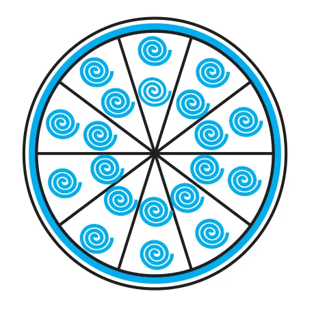
(i) 360°10 = 36°
(ii) Circumference = 227 × 35 = 110 mm. Arc = 110 × 110 = 11 mm
(iii)(a) Circle = 227 × 17.5² = 962.5 mm². Each sector = 96.25 mm²
(iii)(b) 110 + 5 × 35 = 285 mm
This is NCERT Ex 11.1 Q9 almost word for word. CBSE loves turning exercise questions into case studies.
CBSE 2024 · 30/1/1 · Q32 · 5 marks (reworded)An arc AB of a circle of radius 21 cm subtends an angle of 60° at the centre O. Find (i) the length of the arc AB, (ii) the area of the minor segment formed by the chord AB. (π = 22/7)
(i) Arc AB = 60360 × 2 × 227 × 21 = 22 cm
(ii) Sector OAB = 60360 × 227 × 21 × 21 = 231 cm²
OA = OB and ∠AOB = 60°, so ΔOAB is equilateral with side 21 cm: area = √34 × 21² = 441√34 ≈ 190.95 cm²
Minor segment = 231 − 441√34 ≈ 40.05 cm²
This is NCERT Ex 11.1 Q5. Marks come for: the arc (formula + value), the sector, the triangle and the subtraction.
CBSE 2024 compartment · 30/S/1 · Q16 · 1 markThe length of an arc of a circle subtending an angle of 60° at its centre is 22 cm. The radius of the circle is: (A) √21 cm (B) 21 cm (C) √42 cm (D) 42 cm
CBSE 2024 compartment · 30/S/1 · Q12 · 1 markThe diagonals of a rhombus ABCD meet at O. An arc of radius 6 cm with centre O cuts OA and OD at E and F. The area of the sector OEF is: (A) 9π cm² (B) 3π cm² (C) 12π cm² (D) 18π cm²
(A) 9π cm². The diagonals of a rhombus are perpendicular, so ∠AOD = 90°: a quadrant.
90360 × π × 6² = 9π cm².
CBSE 2024 compartment · 30/S/1 · Q31 · 3 marks (OR pair)(a) Find the areas of the minor and major sectors of a circle of radius 6 cm if the minor arc subtends 60° at the centre. (π = 3.14) OR (b) A chord of a circle of radius 10 cm subtends an angle of 60° at the centre. Find the area of the minor segment. (π = 3.14, √3 = 1.73)
(a) Minor sector = 16 × 3.14 × 36 = 18.84 cm². Circle = 113.04 cm², so major sector = 113.04 − 18.84 = 94.2 cm².
(b) Sector = 16 × 3.14 × 100 = 52.33 cm². Equilateral ΔOAB = 1.734 × 100 = 43.25 cm².
Minor segment = 52.33 − 43.25 ≈ 9.08 cm²
CBSE 2023 · 30/1/1 · Q34A chord of a circle of radius 14 cm subtends an angle of 60° at the centre. Find the area of the corresponding minor segment of the circle. Also find the area of the major segment. (π = 22/7)
Sector = 60360 × 227 × 14 × 14 = 3083 cm² ≈ 102.67 cm² [1 mark]
ΔOAB is equilateral (OA = OB, angle 60°): area = √34 × 14² = 49√3 ≈ 84.87 cm²
Minor segment = 3083 − 49√3 ≈ 17.8 cm² [1 mark]
Major segment = πr² − minor segment = 616 − (3083 − 49√3) = 15403 + 49√3 ≈ 598.2 cm² [1 mark]
Marks as split in the CBSE 2023 marking scheme. Answers like 17.9 and 598.1 (with √3 = 1.73) were also accepted.
CBSE section-wise practice
Questions in the exact CBSE format, from easy to board level. Try each before opening the answer. π = 227 unless stated.
Section A: MCQs (1 mark each)
A1The area of a sector of angle 90° of a circle of radius 14 cm is (a) 154 cm² (b) 616 cm² (c) 44 cm² (d) 308 cm²
A2The perimeter of a sector of radius 7 cm and angle 90° is (a) 11 cm (b) 25 cm (c) 18 cm (d) 22 cm
A3The area of a sector is 110 of the area of the circle. Its angle is (a) 10° (b) 36° (c) 18° (d) 72°
A4If the radius of a sector is doubled and its angle is halved, its area becomes (a) the same (b) 2 times (c) 4 times (d) half
A5The angle described by the minute hand of a clock in 20 minutes is (a) 60° (b) 100° (c) 120° (d) 10°
A6The area of a circle whose circumference is 44 cm is (a) 77 cm² (b) 154 cm² (c) 308 cm² (d) 616 cm²
Section A: Assertion–Reason (1 mark each)
(a) Both A and R are true and R explains A. (b) Both true, R does not explain A. (c) A true, R false. (d) A false, R true.
AR1A: The area of a sector of angle 60° of a circle of radius 6 cm is 6π cm². R: Area of a sector of angle θ = θ360 × πr².
AR2A: The area of the minor segment of a circle of radius r for a right angle at the centre is (π4 − 12) r². R: Area of segment = area of sector − area of the corresponding triangle.
AR3A: If the circumferences of two circles are in the ratio 2 : 3, their areas are in the ratio 4 : 9. R: The area of a circle is proportional to its radius.
Section B: Very short answer (2 marks each)
B1Find the area of the sector of a circle of radius 21 cm and central angle 120°.
Area = 120360 × 227 × 21 × 21 [1] = 13 × 1386 = 462 cm² [1]
B2The length of an arc of a circle of radius 14 cm is 22 cm. Find the angle subtended by the arc at the centre.
θ360 × 2 × 227 × 14 = 22 ⇒ θ360 × 88 = 22 [1] ⇒ θ = 90° [1]
B3The minute hand of a clock is 7 cm long. Find the area swept by it in 20 minutes.
Angle = 20 × 6° = 120° [½]. Area = 120360 × 227 × 49 [1] = 1543 ≈ 51.33 cm² [½]
B4A pendulum swings through an angle of 60° and describes an arc of 8.8 cm. Find the length of the pendulum.
The pendulum is the radius. 60360 × 2 × 227 × r = 8.8 [1] ⇒ 22r21 = 8.8 ⇒ r = 8.4 cm [1]
Section C: Short answer (3 marks each)
C1A chord of a circle of radius 14 cm subtends a right angle at the centre. Find the areas of the minor and major segments.
Quadrant = 14 × 616 = 154 cm² [1]. ΔOAB = ½ × 14 × 14 = 98 cm².
Minor segment = 154 − 98 = 56 cm² [1]. Major segment = 616 − 56 = 560 cm² [1]
C2Find the area and the perimeter of a sector of radius 10.5 cm and angle 60°.
Area = 16 × 227 × 10.5 × 10.5 = 57.75 cm² [1½]
Arc = 16 × 2 × 227 × 10.5 = 11 cm. Perimeter = 10.5 + 10.5 + 11 = 32 cm [1½]
C3A goat is tied with a 7 m rope at one outside corner of a square shed of side 10 m. It cannot enter the shed. Find the area it can graze.
At an outside corner the shed blocks 90°, so the goat sweeps 360° − 90° = 270° [1]. The rope (7 m) is shorter than the wall (10 m), so it cannot go round the shed.
Area = 270360 × 227 × 7 × 7 [1] = 34 × 154 = 115.5 m² [1]
Section D: Long answer (5 marks each)
D1A chord AB of a circle of radius 21 cm subtends an angle of 120° at the centre. Find (i) the length of the minor arc AB, (ii) the area of the minor sector, (iii) the area of ΔOAB, (iv) the areas of the minor and major segments. (√3 = 1.73)
(i) Arc = 13 × 132 = 44 cm [1]
(ii) Sector = 13 × 1386 = 462 cm² [1]
(iii) OM = 21 cos 60° = 10.5 cm, AM = 21 sin 60° = 21√32, AB = 21√3. ΔOAB = ½ × 21√3 × 10.5 = 441√34 = 190.73 cm² [1½]
(iv) Minor segment = 462 − 190.73 = 271.27 cm²; major segment = 1386 − 271.27 = 1114.73 cm² [1½]
D2The minute hand of a clock is 10.5 cm long and the hour hand is 7 cm long. From 9:00 a.m. to 9:35 a.m., find (i) the angle turned by each hand, (ii) the area swept by the minute hand, (iii) the distance moved by the tip of the minute hand.
(i) Minute hand: 35 × 6° = 210°. Hour hand: 35 × ½° = 17.5° [1]
(ii) Area = 210360 × 227 × 10.5 × 10.5 = 712 × 346.5 = 202.125 cm² [2]
(iii) Arc = 712 × 2 × 227 × 10.5 = 712 × 66 = 38.5 cm [2]
Section E: Case studies (4 marks each)
E1Car wipers. A car has two wipers which do not overlap. Each wiper arm is 21 cm long and sweeps through 120°. (i) Find the length of the arc traced by the tip of one wiper. [1] (ii) Find the area swept by one wiper. [1] (iii)(a) The rubber blade covers only the part from 7 cm to 21 cm from the pivot. Find the area actually cleaned by one blade. [2] OR (iii)(b) If the sweep angle is increased to 150°, by how much does the area swept by one wiper increase? [2]
(i) 13 × 132 = 44 cm
(ii) 13 × 1386 = 462 cm²
(iii)(a) Ring-shaped sector = 120360 × π(21² − 7²) = 13 × 227 × 392 = 12323 ≈ 410.67 cm²
(iii)(b) Extra 30°: 30360 × 1386 = 115.5 cm²
E2School rangoli. For Republic Day, students draw a circle of radius 28 cm and a square inside it with its corners on the circle. The 4 segments outside the square are filled with colour. (i) Find the area of the circle. [1] (ii) Find the area of the square. [1] (iii)(a) Find the area filled with colour and the cost of colour at ₹0.50 per cm². [2] OR (iii)(b) Find the area of one coloured segment. [2]
(i) 227 × 28 × 28 = 2464 cm²
(ii) The diagonal of the square is the diameter, 56 cm. Area = d²2 = 31362 = 1568 cm²
(iii)(a) Colour = 2464 − 1568 = 896 cm²; cost = 896 × 0.50 = ₹448
(iii)(b) Each segment subtends 90°: 616 − ½ × 28 × 28 = 616 − 392 = 224 cm²
Summary (NCERT 11.2)
- Length of an arc of a sector of a circle with radius r and angle with degree measure θ is θ360 × 2πr.
- Area of a sector of a circle with radius r and angle with degree measure θ is θ360 × πr².
- Area of a segment of a circle = area of the corresponding sector − area of the corresponding triangle.
Test yourself
15 quick questions. Tap an answer to see if it is right. Score: 0 / 15
1. The region between two radii and an arc is a
Two radii + arc = sector. Chord + arc = segment.
2. Arc length of a sector of angle θ is
Fraction of the circumference.
3. Area of a quadrant of a circle of radius 14 cm
¼ × 616.
4. Angle of the major sector when the minor sector has angle 75°
360° − 75°.
5. Area swept by a minute hand of 14 cm in 5 minutes
30° = 1/12 of 616.
6. For θ = 60°, triangle OAB is
OA = OB and the angle between them is 60°, so all angles are 60°.
7. Minor segment for 90° in a circle of radius 10 cm (π = 3.14)
78.5 − 50.
8. Perimeter of a sector of radius r and arc length l
Arc + two radii.
9. Area of a sector of angle p (degrees) of a circle of radius R
Ex 11.1 Q14: p/360 × πR² = p/720 × 2πR².
10. Hour hand angle between 7:00 and 8:10
70 min × ½° (CBSE 2026).
11. A sector of area 40π has angle 72°. Radius?
r² = 200 (CBSE 2025).
12. Major segment =
Whole circle minus the minor segment.
13. A horse tied at a corner of a square field with a 5 m rope grazes (π = 3.14)
A quadrant: ¼ × 3.14 × 25.
14. If the radius is doubled, the arc length of a sector of the same angle becomes
Arc ∝ r.
15. Each sector of a brooch with 5 diameters has angle
5 diameters make 10 sectors.
Answers to all 14 exercise questions
Exercise 11.1 (π = 22/7 unless stated)
1.Find the area of a sector of a circle with radius 6 cm if the angle of the sector is 60°.
Area = 60360 × 227 × 6 × 6 = 16 × 7927
= 1327 cm² ≈ 18.86 cm²
2.Find the area of a quadrant of a circle whose circumference is 22 cm.
2πr = 22 ⇒ 2 × 227 × r = 22 ⇒ r = 72 cm.
Quadrant = 14 × 227 × 72 × 72 = 778
= 778 cm² = 9.625 cm²
3.The length of the minute hand of a clock is 14 cm. Find the area swept by the minute hand in 5 minutes.
In 60 minutes the hand turns 360°, so in 5 minutes it turns 30°.
Area = 30360 × 227 × 14 × 14 = 112 × 616
= 1543 cm² ≈ 51.33 cm²
4.A chord of a circle of radius 10 cm subtends a right angle at the centre. Find the area of the corresponding (i) minor segment (ii) major sector. (π = 3.14)
Minor sector = 90360 × 3.14 × 100 = 78.5 cm². ΔOAB = ½ × 10 × 10 = 50 cm².
(i) Minor segment = 78.5 − 50 = 28.5 cm²
(ii) Major sector = 3.14 × 100 − 78.5 = 235.5 cm²
5.In a circle of radius 21 cm, an arc subtends an angle of 60° at the centre. Find: (i) the length of the arc (ii) the area of the sector formed by the arc (iii) the area of the segment formed by the corresponding chord.
(i) Arc = 60360 × 2 × 227 × 21 = 22 cm
(ii) Sector = 60360 × 227 × 21 × 21 = 231 cm²
(iii) ΔOAB is equilateral (side 21): area = √34 × 441 = 441√34 cm²
Segment = (231 − 441√34) cm² ≈ 40.05 cm²
Asked as CBSE 2024 Q32 (5 marks).
6.A chord of a circle of radius 15 cm subtends an angle of 60° at the centre. Find the areas of the corresponding minor and major segments. (π = 3.14, √3 = 1.73)
Sector = 16 × 3.14 × 225 = 117.75 cm². Equilateral ΔOAB = 1.734 × 225 = 97.3125 cm².
Minor segment = 117.75 − 97.3125 = 20.4375 cm²
Circle = 3.14 × 225 = 706.5 cm². Major segment = 706.5 − 20.4375 = 686.0625 cm²
7.A chord of a circle of radius 12 cm subtends an angle of 120° at the centre. Find the area of the corresponding segment. (π = 3.14, √3 = 1.73)
Sector = 13 × 3.14 × 144 = 150.72 cm².
Draw OM ⊥ AB: ∠AOM = 60°, OM = 12 cos 60° = 6 cm, AM = 12 sin 60° = 6√3 cm, AB = 12√3 cm.
ΔOAB = ½ × 12√3 × 6 = 36√3 = 36 × 1.73 = 62.28 cm²
Segment = 150.72 − 62.28 = 88.44 cm²
8.A horse is tied to a peg at one corner of a square grass field of side 15 m by a 5 m rope. Find (i) the area of the part of the field in which the horse can graze, (ii) the increase in the grazing area if the rope were 10 m long. (π = 3.14)
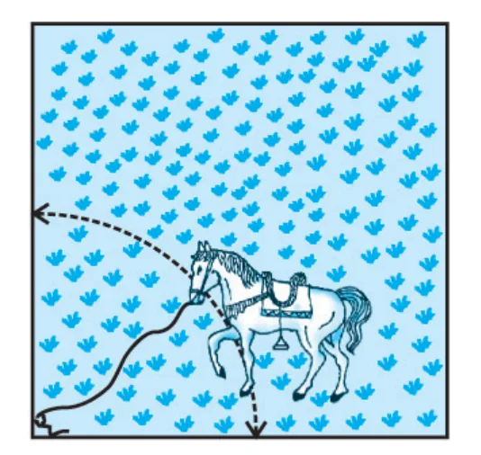
The corner angle is 90°, so the horse grazes a quadrant.
(i) 14 × 3.14 × 5² = 19.625 m²
(ii) With 10 m: 14 × 3.14 × 100 = 78.5 m². Increase = 78.5 − 19.625 = 58.875 m²
Try it in Lab 2.
9.A brooch is made with silver wire in the form of a circle of diameter 35 mm. The wire is also used to make 5 diameters dividing the circle into 10 equal sectors. Find (i) the total length of silver wire, (ii) the area of each sector.
(i) Circumference = πd = 227 × 35 = 110 mm. Wire = 110 + 5 × 35 = 285 mm
(ii) Each sector = 36360 × 227 × 352 × 352 = 3854 = 96.25 mm²
Came as the CBSE case study in 2025 and 2026.
10.An umbrella has 8 ribs which are equally spaced. Assuming the umbrella to be a flat circle of radius 45 cm, find the area between two consecutive ribs.
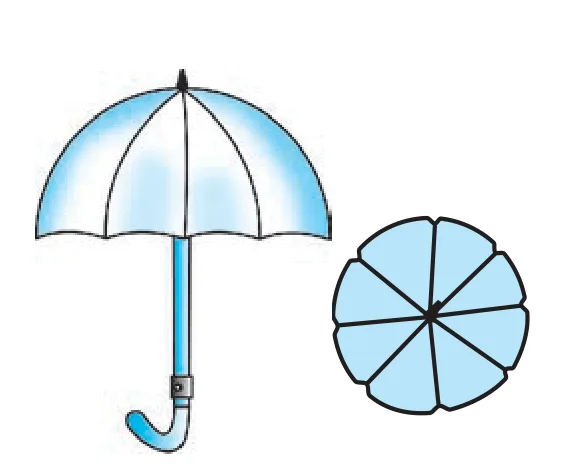
Angle between ribs = 3608 = 45°.
Area = 45360 × 227 × 45 × 45 = 2227528
≈ 795.54 cm²
11.A car has two wipers which do not overlap. Each wiper has a blade of length 25 cm sweeping through an angle of 115°. Find the total area cleaned at each sweep of the blades.
One wiper = 115360 × 227 × 25 × 25 = 158125252 cm²
Two wipers = 2 × 158125252 = 158125126
≈ 1254.96 cm²
12.To warn ships of underwater rocks, a lighthouse spreads a red light over a sector of angle 80° to a distance of 16.5 km. Find the area of the sea over which ships are warned. (π = 3.14)
Area = 80360 × 3.14 × 16.5 × 16.5 = 29 × 854.865
≈ 189.97 km²
13.A round table cover has six equal designs. If the radius of the cover is 28 cm, find the cost of making the designs at ₹0.35 per cm². (√3 = 1.7)
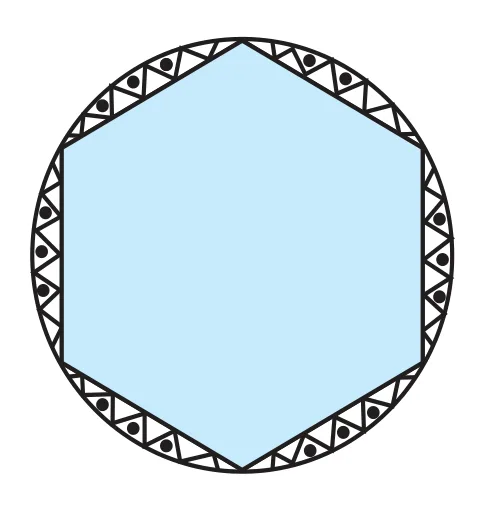
The six designs are segments, each with angle 3606 = 60°.
One sector = 16 × 227 × 28 × 28 = 12323 ≈ 410.67 cm². Equilateral triangle = √34 × 784 = 196 × 1.7 = 333.2 cm².
One design = 410.67 − 333.2 = 77.47 cm². Six designs = 2464 − 6 × 333.2 = 464.8 cm²
Cost = 464.8 × 0.35 = ₹162.68
Play with other polygons in Lab 4.
14.Tick the correct answer: area of a sector of angle p (in degrees) of a circle with radius R is (A) p180 × 2πR (B) p180 × πR² (C) p360 × 2πR (D) p720 × 2πR²
(D). p360 × πR² = p720 × 2πR². (A) and (C) are lengths, (B) is double the area.